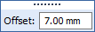

Define an operational constraint
Use this procedure to define a constraint boundary condition or optimization constraint for a generative study. For more information about a specific type of constraint, click the links to the individual constraint help topics.
-
On the ribbon, choose one of the following constraint types from the Generative Design tab→Constraints group:
-
Maximum Displacement design optimization constraint
-
Select geometry—
-
For a fixed or pinned constraint, on the command bar, from the Selection Type list, first select the type of entity to which the constraint is to be applied—face or feature—and then click the elements where you want to apply the constraint.
-
To deselect a face, use Ctrl+click.
A preview of the constraint is displayed on the selected faces.
-
-
Type the constraint values in the dynamic input boxes as appropriate. Press Tab to move the cursor between fields. If you change the units, the value is converted to the default units.
Example:For fixed and pinned constraints, only an Offset is required. Offset is the additional volume to keep between the face and the constraint during the generative process.

Note:The Offset value that is displayed as a default is the recommended value based on the volume of the design space and the default study quality setting defined on the Generative Design page of the Solid Edge Options dialog box.
A low study quality setting causes a higher default offset value to be displayed.
A higher study quality setting requires less material volume to be kept, so the default offset value is lower.
-
To finish adding the constraint, right-click or press the Enter key.
-
To end the command, click in space.
To edit the constraint you created, double-click the constraint name in the Generative Design pane, for example Fixed 1. This displays the constraint and the command bar in the graphics window, for you to change the inputs.